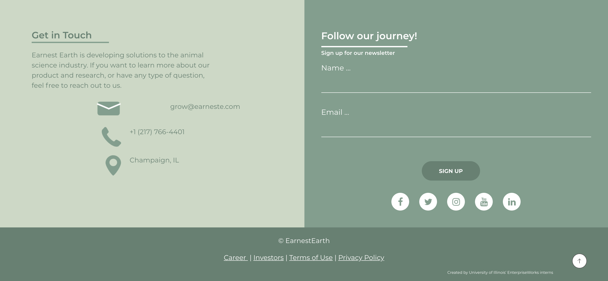
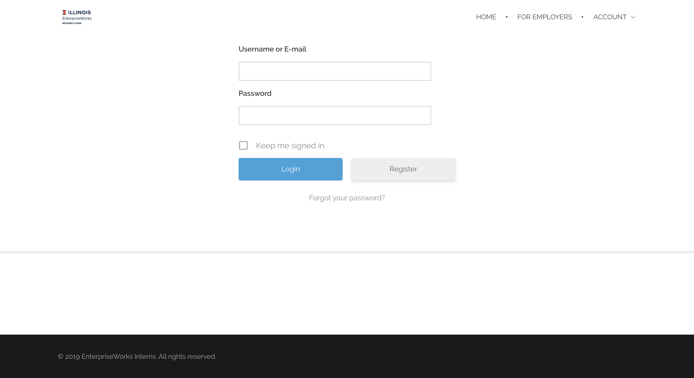
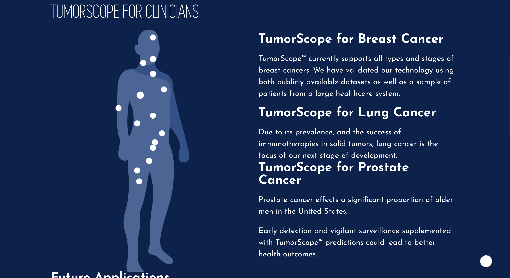

❮
❯
web development
A collection of websites I helped to develop. It is important to note I am not in charge of maintaining these websites therefore changes may have been made upon closure of project.
Skills: HTML5, CSS, Javascript, Wordpress
Trinity Grace Church
Modernized the website for Trinity Grace Church. Some features I implemented include a translation function and in site sermon play back.
The website can be viewed here.
Earnest Earth
A startup located in Urbana, Illinois that is seeking to recycle farm waste as fertilizer. The website can be from
here. Key elements displayed on this website include parallax scrolling, a contact form and testimonial slider.
EntepriseWorks Intern Website
Intern website used by all University of Illinois EnterpriseWorks Tech Incubator interns. The website can be from
here. I implemented a login and logout system and also created the base framework for the website.
Simbiosys
A medical tech startup company in the field of cancer treatment. The website can be from
here. Noteworthy elements include the software page where I implemented and interactive human body.